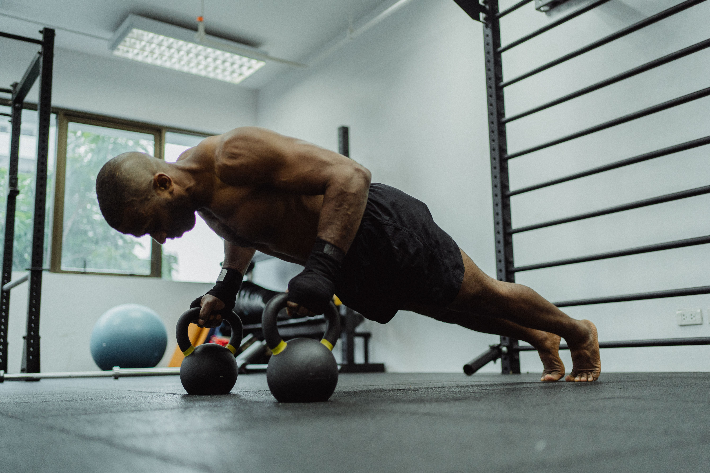
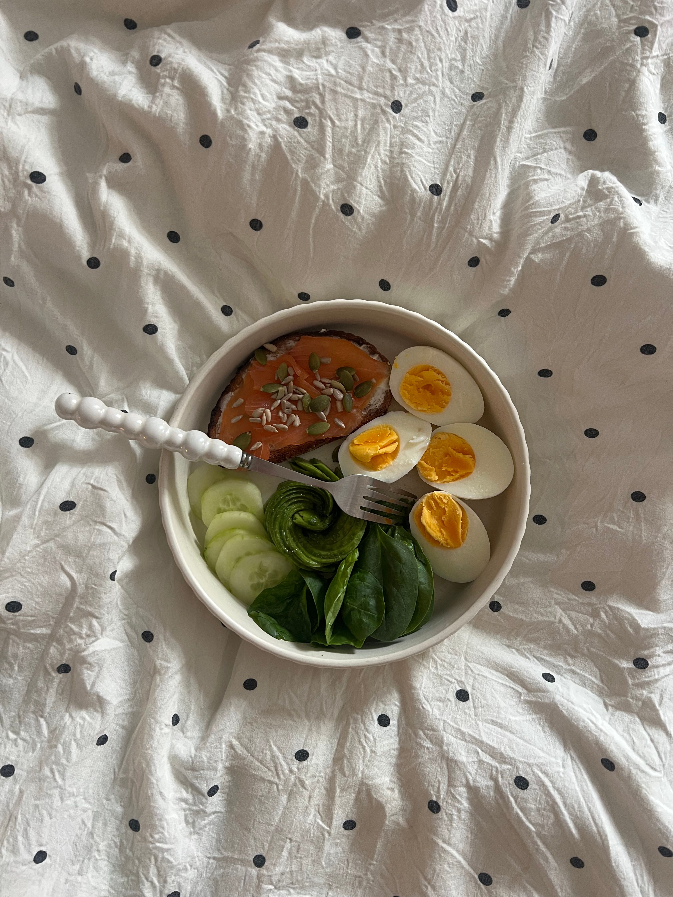
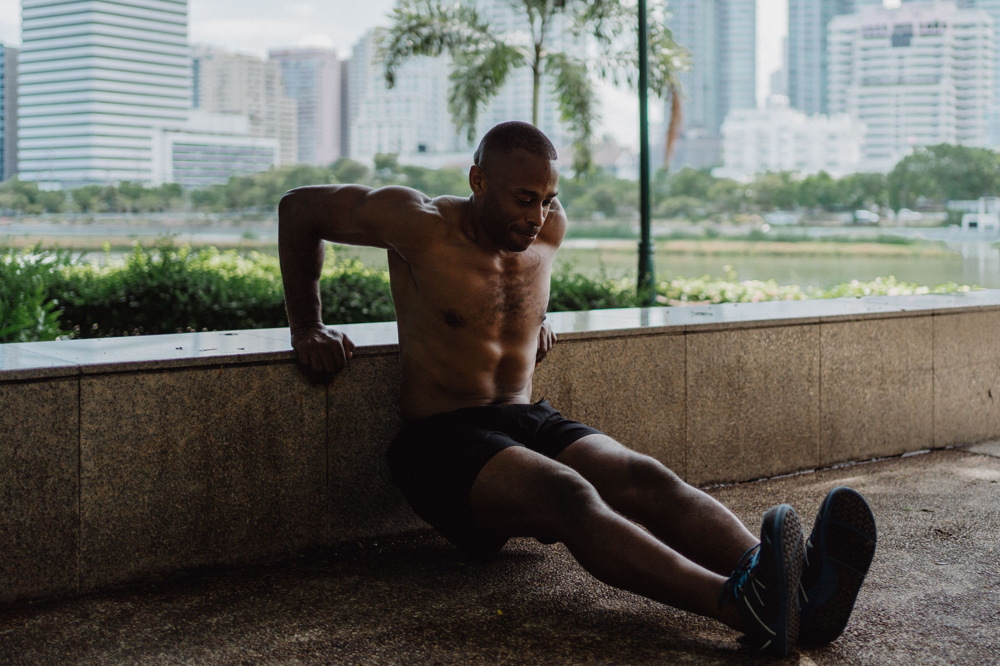

How to Build Muscle Step by Step: A Practical Guide for Beginners
Building muscle does not require a complicated routine, expensive equipment or a perfect body. What matters most is understanding how resistance training, food, recovery and consistency work together.

Kinglee6 Mutwiri
Many beginners start muscle building with the same question: what should I do first? Some immediately think about buying supplements. Others search for the hardest workout they can find. Some believe they need a gym membership before they can begin.
The reality is much simpler. Muscle growth is a gradual process. Your body needs a reason to adapt, enough food and nutrients to support that adaptation, and enough recovery time for the process to continue. You also need patience because visible changes usually take longer than the first few workouts.
This guide explains the process step by step for someone starting from the beginning. It focuses on practical habits rather than complicated fitness trends.

What Does It Actually Mean to Build Muscle?
Building muscle, sometimes called muscle hypertrophy, means increasing the size of muscle tissue over time. This happens as the body adapts to repeated resistance and training demands.
When you perform exercises such as squats, push-ups, rows, presses or resistance-band movements, your muscles have to produce force. With a suitable training plan, repeated exposure to resistance encourages the body to adapt.
That does not mean every workout needs to leave you exhausted. In fact, the most useful programme is often the one you can continue doing for months rather than the one that makes you extremely tired after one session.
The American College of Sports Medicine's 2026 resistance-training guidance emphasises consistency and says that complicated training methods are not necessary for the average healthy adult. It also notes that bodyweight exercises, resistance bands and home-based training can be effective. 1
Step 1: Decide Why You Want to Build Muscle
Before choosing exercises, decide what you actually want to achieve. Your goal could be to become stronger, add muscle, improve your appearance, become more capable during daily activities or simply develop a healthier routine.
Having a clear reason matters because muscle building is not a one-week project. There will be days when you do not feel motivated. There will also be periods when progress appears slow. A clear goal gives you something to return to when excitement disappears.
This is one reason I believe fitness is connected to the broader subject of personal development. You can read more about developing long-term habits and improving yourself on the Personal Growth & Success page.
Step 2: Start With Resistance Training
Resistance training is the foundation of a muscle-building programme. It can involve free weights, machines, resistance bands or your own body weight.
You do not need to begin with an advanced bodybuilding programme. A beginner can start by learning basic movement patterns and gradually making the exercises more challenging.
Useful beginner movements
- Squats or controlled squat variations
- Push-ups or easier push-up variations
- Rows using a safe resistance method
- Hip-hinge movements
- Overhead pressing movements
- Lunges or split-squat variations
- Calf raises
- Core exercises
The purpose at the beginning is not to impress anyone. It is to learn good movement, establish a routine and give your muscles a consistent training stimulus.
NHS guidance also recommends muscle-strengthening activities for the major muscle groups on at least two days each week for adults. It includes activities such as lifting weights, using resistance bands and bodyweight exercises among the possible options. 2
Step 3: Train All the Major Muscle Groups
A common beginner mistake is focusing only on the muscles that are easiest to see in a mirror. Someone may train the chest and arms repeatedly while neglecting the legs, back and other important areas.
A more balanced approach trains the major muscle groups. This creates a more complete programme and helps you develop strength throughout the body.
Your programme can include movements for the legs, hips, back, abdomen, chest, shoulders and arms. You do not have to give every muscle a separate day. Beginners can often use full-body sessions or a simple split that fits their schedule.
Step 4: Learn the Difference Between Effort and Pain
Training should feel challenging, but pain is not a requirement for muscle growth. Beginners sometimes assume that a workout only counts if they can barely move afterwards. That is not a useful standard.
During resistance training, you should expect muscular effort and fatigue. However, sharp, sudden or unusual pain is different from normal exercise difficulty. If an exercise causes concerning pain, stop and seek appropriate professional advice rather than trying to prove that you can continue.
Technique also matters. A lighter resistance performed with controlled movement can be more useful for learning an exercise than immediately choosing a load that you cannot control.
Step 5: Increase the Challenge Gradually
Your body adapts to repeated training. If the challenge never changes, there may eventually be less reason for further adaptation.
This is where gradual progression becomes important. You can increase the challenge by adding resistance, performing more repetitions, adding a set, improving your technique or choosing a more difficult variation.
You do not need to increase everything at once. Small improvements made consistently are easier to manage and track.
For example, suppose you begin with a movement that you can perform for eight controlled repetitions. After several weeks, you may be able to perform ten or twelve with good technique. Once that becomes comfortable, you may increase the resistance slightly and begin progressing again.
ACSM's 2026 guidance specifically notes that muscle growth can be supported by appropriate weekly training volume and recommends tailoring training to the individual's goals and circumstances. 3
Step 6: Do Not Ignore Your Food
Training provides the stimulus, but food supplies the energy and nutrients your body needs. This is why spending hours exercising while paying little attention to your diet can make muscle-building progress unnecessarily difficult.
A muscle-building diet does not have to be expensive. Depending on where you live and what foods are available, useful protein sources can include eggs, milk, yoghurt, beans, peas, lentils, fish, chicken and other meats.
Foods such as rice, potatoes, oats, maize, bread and other carbohydrate sources can provide energy for training. Fruits and vegetables add vitamins, minerals and fibre. A balanced diet is more useful than building your entire diet around one fashionable food.
The NHS identifies beans, pulses, fish, eggs, meat and other protein foods as important sources of protein and other nutrients. 4
Protein matters
Protein provides amino acids used by the body for growth and repair. If you are training regularly, including a protein source in your meals is a practical habit.
You do not need to become obsessed with counting every gram of food from the first day. Beginners can start by making sure their main meals contain a reasonable protein source and by eating a varied diet.
Step 7: Eat Enough to Support Your Goal
Another important issue is total food intake. Someone trying to gain muscle may struggle if they consistently eat too little food to support their training and body-weight goals.
This does not mean that you should eat everything in sight. Large amounts of highly processed food can increase body weight without providing the nutritional quality you need.
A better approach is to build meals around useful foods and adjust portions according to your progress. If gaining weight is one of your goals, foods such as nuts, seeds, dairy products, eggs, beans and other nutrient-dense foods can make meals more substantial.
The NHS also recommends a balanced approach when trying to gain weight, including adding protein-rich foods and choosing foods from different food groups rather than relying on sugary foods and drinks. 5

Step 8: Understand That Supplements Are Not the Foundation
The fitness industry can make beginners believe that muscle growth depends on supplements. Walk into a shop or scroll through social media and you can quickly find powders, drinks and products promising faster results.
Supplements can have specific uses, but they do not replace resistance training, adequate food, sleep and consistency.
If your basic habits are poor, buying more products will not solve the main problem. A beginner should first establish a training routine and a sensible eating pattern.
This is also where financial thinking becomes relevant. Spending money on every fitness product advertised online can become expensive. If you want to think more carefully about how money decisions affect everyday life, you can explore the Psychology of Money page.
Step 9: Give Your Body Time to Recover
Training is only one part of the process. Recovery matters because your body needs time between demanding sessions.
Sleep, food and rest all contribute to recovery. You do not need to train the same muscles hard every day to build muscle. In many cases, giving a trained muscle time before challenging it again is more sensible than constantly repeating the same workout.
Beginners sometimes believe more exercise automatically means faster results. But more is not always better when the additional work reduces the quality of training, recovery or everyday life.
Step 10: Build a Routine You Can Actually Maintain
A perfect routine that you abandon after two weeks is less useful than a simple routine you can follow for many months.
Before choosing a programme, consider your schedule. If you can realistically train three days per week, build around three days. If your circumstances allow only two strength sessions, make those sessions purposeful.
The important point is to stop treating consistency as something that requires perfect circumstances. Life will sometimes interfere. The goal is to return to your routine rather than deciding that one missed workout has ruined everything.
For broader ideas about how habits, decisions and personal behaviour affect progress, visit the Mindset & Life section of Kinglee6 Mutwiri.
Step 11: Track Your Progress
You cannot improve what you never pay attention to. Tracking does not need to be complicated.
Write down the exercise, resistance used, repetitions and sets. You can also record your body weight if gaining weight is one of your goals.
Progress may appear in several forms. You might lift more weight, perform more repetitions, control an exercise better or notice that an exercise that once felt difficult has become easier.
Photographs can also help when taken under reasonably similar conditions. The mirror is not always a reliable day-to-day measurement because lighting, posture and hydration can change how your body looks.
Step 12: Use a Simple Beginner Workout Structure
A beginner does not need a dozen exercises in one session. A simple full-body routine can cover the major movement patterns.
Example beginner structure
- Warm up with light movement and easier versions of the exercises.
- Perform a leg exercise such as a squat variation.
- Perform a pushing exercise such as a push-up or press.
- Perform a pulling exercise such as a row.
- Perform a hip-focused movement.
- Add a shoulder or arm exercise if appropriate.
- Finish with a suitable core exercise.
The exact number of sets and repetitions should depend on your ability, the exercise and the programme. The important thing for a beginner is to learn the movements, train consistently and increase the challenge gradually.
NHS guidance similarly recommends starting gradually and building up over time rather than trying to do everything immediately. 6
Step 13: Learn From Your Own Progress
Your body will not respond exactly like another person's body. Two beginners can follow similar routines and experience different rates of progress.
Genetics, previous training, age, nutrition, sleep, daily activity and many other factors can influence how someone responds to exercise.
This is why comparing yourself with someone on social media can be misleading. You usually do not know their training history, diet, recovery, genetics, lighting, editing or how long they have actually been training.
A more useful comparison is between where you are now and where you were several months ago.
Common Muscle-Building Mistakes Beginners Should Avoid
Changing programmes every week
Constantly changing exercises makes it difficult to know whether you are actually progressing. Give a sensible routine enough time to produce useful information before replacing it.
Trying to lift too much too soon
Heavy resistance can be useful, but beginners need to learn how to control movements first. Increasing resistance gradually gives you a better opportunity to develop your technique.
Ignoring the legs
Training only the chest and arms creates an incomplete programme. Include exercises that challenge your lower body as well.
Eating poorly because you are exercising
Exercise does not automatically make an unhealthy diet healthy. Your overall eating pattern still matters.
Expecting rapid transformation
Muscle growth takes time. Anyone promising that a beginner can completely transform their body in a few days is setting unrealistic expectations.
Copying an advanced bodybuilder's programme
Someone who has trained for years has different needs from someone completing their first month. Start at your own level and develop gradually.
What If You Cannot Afford a Gym?
A limited budget does not automatically prevent you from becoming stronger. Bodyweight movements and resistance bands can provide useful training options.
Push-ups, squats, lunges, step-ups and other movements can be adapted to your ability. Household objects can sometimes be useful for resistance, but safety should come first. Do not use unstable or dangerously heavy objects simply because you want to make an exercise harder.
ACSM's 2026 evidence review specifically notes that effective resistance training does not require a traditional gym environment and that bodyweight and elastic-band training can produce useful results. 7

How Long Does It Take to Build Muscle?
There is no single number of weeks that applies to everybody. Beginners may notice improvements in strength relatively early, while visible changes in muscle size can take longer.
Your starting point, training quality, food intake, recovery, genetics and consistency all matter. Instead of setting an unrealistic deadline, focus on whether your habits are improving.
A useful way to think about the process is to divide it into small periods. Train consistently for several weeks, review your progress, make sensible adjustments and continue. Over time, those small periods add up.
The Mental Side of Building Muscle
Muscle building is partly physical and partly behavioural. You have to make decisions repeatedly: whether to train, whether to recover, what to eat, whether to increase the challenge and whether to continue when results are not immediately visible.
That is why the process can teach lessons beyond fitness. Progress often comes from ordinary actions repeated long enough to become meaningful.
On my website, I often explore the connection between behaviour, decisions and personal development. If those subjects interest you, the Relationships & Human Behaviour page explores another side of how people think and behave.
Practical Lessons I Would Take From the Process
The first lesson is that you do not need to start perfectly. You need to start in a way that you can continue.
The second is that patience matters. The internet often shows finished results without showing the months or years of work behind them. A beginner should judge progress over a meaningful period rather than from one morning in front of a mirror.
The third is that consistency is more useful than constantly searching for a secret technique. There will always be another workout, supplement or fitness trend claiming to be better. Before chasing something new, make sure the basics are already working.
The fourth is that health should remain more important than appearance. Building muscle can be a worthwhile goal, but it should not require reckless training, dangerous dieting or ignoring warning signs from your body.
A Simple Beginner Checklist
- Choose a clear muscle-building or strength goal.
- Train your major muscle groups consistently.
- Start with exercises you can perform safely.
- Increase the challenge gradually.
- Eat balanced meals with adequate protein.
- Get enough food to support your individual goal.
- Allow your body time to recover.
- Track your workouts and progress.
- Avoid constantly changing programmes.
- Do not depend on supplements as the foundation.
- Be patient with visible changes.
- Ask a qualified health or exercise professional when you have medical concerns or need individual guidance.
Final Thoughts
Building muscle is not a competition to see who can train the hardest on the first day. It is a process of giving your body a consistent training stimulus while supporting it with appropriate food and recovery.
You can begin with simple exercises. You can train at home. You can start with limited equipment. You can improve gradually.
The most important change for a beginner may not happen in the mirror immediately. It may happen in your routine: you become someone who trains consistently, pays attention to food, respects recovery and keeps improving.
That is the foundation. The heavier weights, stronger movements and physical changes can come with time.
If you want to explore more ideas about life, habits and personal development after reading this guide, you can return to the Kinglee6 Mutwiri homepage and explore the other stories and ideas on the site.
Frequently Asked Questions
Can a beginner build muscle at home?
Yes. Bodyweight exercises and resistance bands can provide effective resistance training. ACSM's 2026 guidance notes that a traditional gym is not required for useful resistance training results. 8
How many days a week should a beginner train?
A beginner can start with a manageable schedule. NHS guidance recommends muscle-strengthening activities involving the major muscle groups on at least two days each week for adults. 9
Do I need supplements to build muscle?
No. Supplements are not the foundation of muscle building. Resistance training, adequate nutrition and recovery are more fundamental. Individual supplement needs can vary, so professional advice may be appropriate when considering a specific product.
What foods are good for building muscle?
Protein-rich foods such as eggs, beans, pulses, fish, dairy products and lean meats can contribute protein to the diet. A balanced eating pattern should also include other food groups. 10
Can I build muscle without lifting very heavy weights?
Yes. Resistance can come from bodyweight exercises, resistance bands, machines or weights. The appropriate challenge depends on the exercise, your ability and your goal. 11
Should I train every day to build muscle faster?
Training every day is not necessary for muscle growth. A good programme should include appropriate recovery and should be sustainable over time.
What should I do if I have a medical condition or have not exercised for a long time?
Speak with an appropriate healthcare professional before starting or significantly changing an exercise programme, particularly if you have a medical condition or concerns about your ability to exercise. NHS guidance recommends seeking advice in these circumstances. 12